Recorded execution
Input edits invalidate old traces. Frozen snapshots preserve previous runs, parameters and answers.
Read the algorithms →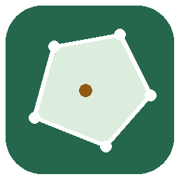
GEOVIZGeometry & spatial securityRepository overview ↗OBJECT-ORIENTED PROGRAMMING PROJECT
A C++17 application for verified algorithm playback and source-linked security analysis.
Satyam Dhal · b425050 · Computer Science and Engineering (B)
Faculty: Dr. Srichandan Shobhanayak
International Institute of Information Technology, Bhubaneswar
ENGINE RECORDINGS
Input edits invalidate old traces. Frozen snapshots preserve previous runs, parameters and answers.
Read the algorithms →Geographic events use local metres. Device behaviour uses scaled fixed-window rates. Source records stay linked.
Follow the security pipeline →Encapsulated models, algorithm Strategies, interchangeable indexes and RAII keep responsibilities explicit.
Inspect the OOP design →SAME INPUT / MEASURED WORK
Algorithm-side counts from the recorded sample. Route expansion counts compare settled vertices. DBSCAN counts compare distance tests and exclude index construction and verification; they are not timing measurements.
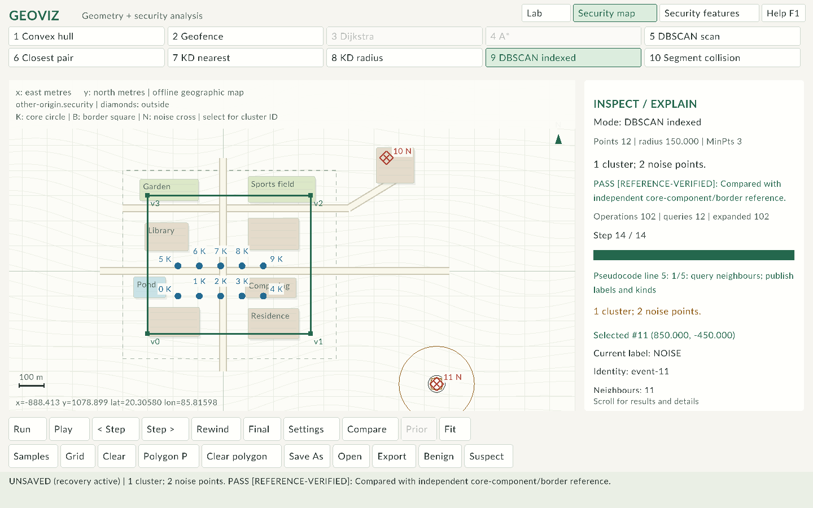
Open GeoViz.exe in the repository root, choose Sample, then Run and Play.
Every run follows validate input → freeze scene → calculate and record → verify → inspect/export. Algorithm work counts exclude playback and independent reference checks. Open the offline guide to play recordings exported directly by the C++ engine.
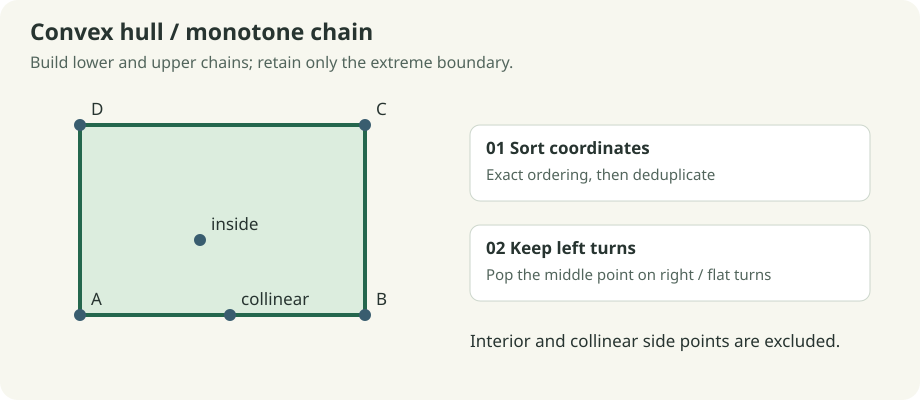
The convex hull is the smallest convex boundary containing all input points. Sort by exact (x, y, input ID), remove duplicate coordinates, then build lower and upper chains. If the newest three vertices turn clockwise or remain collinear, remove the middle vertex. Join the two chains without repeating their endpoints.
ids = sort_and_deduplicate(points)
for order in [left_to_right, right_to_left]:
chain = []
for p in order:
while chain has two vertices and orientation(last_two, p) <= 0:
remove last vertex
append p
join lower and upper chains without duplicate endpoints
For (0,0), (4,0), (4,3), (0,3), (2,1), (2,0), the hull is the four rectangle corners. The two additional points do not become hull vertices. Exact duplicates collapse; collinear sides keep only extreme endpoints. Empty, singleton and all-collinear inputs are valid.
Recorded: candidate, removed point and accepted chain; final closed boundary. Check: convex turns and containment of every input. Computation: O(n log n) time, O(n) auxiliary storage, excluding trace and verification. A hull can enclose empty space; it does not identify a density cluster.
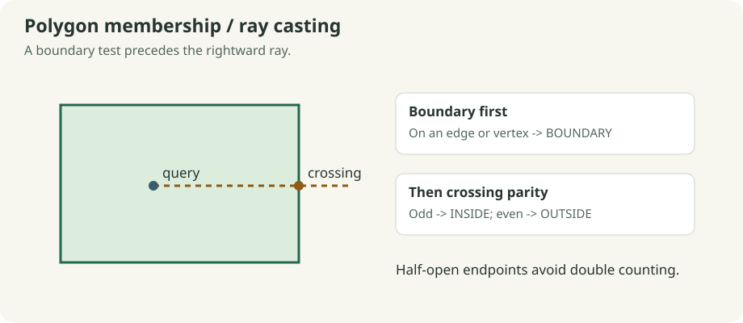
Validate a simple nonzero-area polygon. First test whether the query lies on any closed edge. Otherwise cast a ray to the right and toggle parity at every crossing. The test (a.y > q.y) != (b.y > q.y) gives a half-open endpoint rule, preventing a vertex from being counted twice; horizontal edges do not divide by zero.
for each polygon edge:
if query lies on edge: return BOUNDARY
inside = false
for each edge spanning query.y under the half-open rule:
x_cross = a.x + (query.y-a.y) * (b.x-a.x) / (b.y-a.y)
if x_cross > query.x: inside = not inside
return INSIDE if inside else OUTSIDE
In the rectangle (0,0), (4,0), (4,3), (0,3), (2,1) is inside, (4,1) is boundary and (5,1) is outside. Concave gallery polygons demonstrate that bounding-box containment is insufficient.
Recorded: tested edges and ray crossings. Check: winding-number classification. Computation: O(m) per query and O(1) working storage; polygon validation separately costs O(m²). Geometry uses the common tolerance described below.
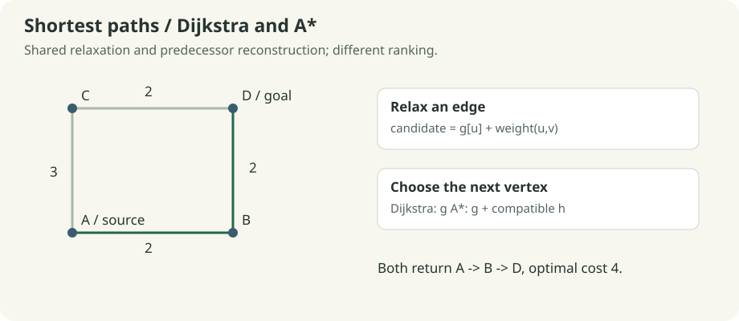
Set the source distance to zero and all others to infinity. A min-heap selects the unsettled vertex with the least tentative cost. Relax an open edge when g[u] + weight < g[v], updating distance and predecessor. Stale heap entries are discarded. Once the goal is settled, follow predecessors back to the source.
push (score=0, cost=0, source)
while heap is not empty:
pop least (score, cost, ID)
skip stale or already-closed entry
close vertex; stop if goal
for each open neighbour:
if path through vertex improves neighbour:
update cost and parent; push new entry
For edges A-B:2, A-C:3, B-D:2, C-D:2, source A and goal D, the optimal route is A-B-D with cost 4. Blocking B-D forces A-C-D with cost 5. Blocking both incoming goal links returns NO PATH, not a fabricated route. The source equal to the goal costs zero. Graphs are simple, undirected and nonnegative; self-links and duplicate pairs are rejected.
Recorded: costs, predecessors, closed vertices and frontier. Check: Bellman-Ford optimal cost plus returned path edges and summed cost. Computation: O((V+E) log V) for the bounded simple graph with lazy binary-heap entries; O(V+E) graph/heap storage, excluding trace and checks.
A* reuses the Dijkstra search and changes only the ranking to f(v)=g(v)+h(v). Ordinary distance graphs use Euclidean distance to the goal. The regular grid uses Manhattan distance divided by its 60-unit spacing. Every open edge is checked: its cost must cover the corresponding geometric lower bound. If any edge is incompatible, the run uses h=0 and reports the fallback.
For A=(0,0), B=(2,0), C=(0,2), D=(2,2) with the preceding edge weights, A* prioritizes B, then D. Both algorithms return cost 4; A* can settle fewer vertices. The number saved depends on layout, obstacles, costs and ties. Moving grid points clears the grid assumption. An admissible estimate must use the same units as the edge costs.
Recorded/check: the route trace also includes f scores; Compare runs Dijkstra on the identical input. Computation: the same worst-case bound as Dijkstra here, with a consistent enabled heuristic. A* is not promised to be faster on every sample.
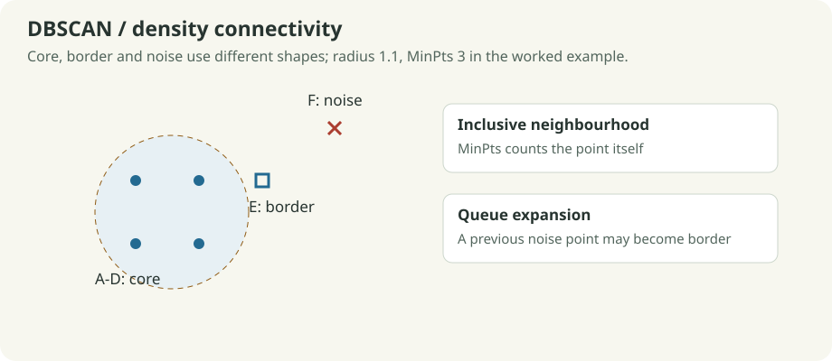
A point is core if its inclusive radius neighbourhood contains at least MinPts points, including itself. A non-core neighbour of a core point is border. Points not reached by any core component are noise. A queue expands through connected core neighbourhoods, so a cluster need not be circular or convex.
visit points in ascending input order
query neighbours of each unvisited point
if too few: mark provisional noise
otherwise start a cluster and queue its neighbours
while queue is not empty:
pop point; query it once if unvisited
if core: enqueue its neighbours deterministically
if unassigned or provisional noise: assign this cluster
For A=(0,0), B=(1,0), C=(0,1), D=(1,1), E=(2,1), F=(6,6), radius 1.1 and MinPts 3, A-D are core, E is border and F is noise. A provisional noise point may later become border. When a border point touches multiple components, the first cluster in deterministic input order wins.
Recorded: radius query, active neighbours, labels, core/border/noise kind and expansion queue. Check: an independently constructed core-neighbour graph and border assignment. Direct computation: O(n²) distance work, O(n) working storage with per-query neighbourhoods, excluding trace and reference storage.
The cluster expansion above is unchanged. A SpatialIndex pointer selects either LinearIndex or KDTree. The tree skips boxes outside the radius before testing individual points. Returned neighbour IDs are sorted, preserving deterministic assignments and exact scan/indexed agreement.
The build has expected O(n log n) time; query performance depends on data distribution and radius. Indexed DBSCAN can still perform O(n²) distance work when neighbourhoods cover most of the data. Compare reports distance tests; it excludes tree construction and verification and is not an elapsed-time benchmark. The sample catalogue records both implementations on the same scenes.
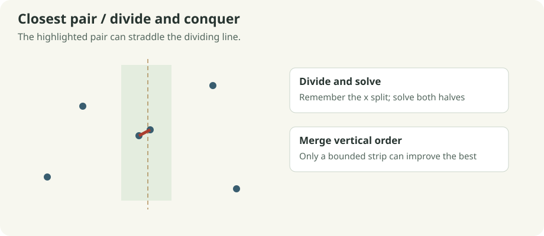
Sort points by x once. Split at the midpoint; solve the left and right ranges; merge their y order using a temporary buffer. A globally best distance bounds a strip about the dividing line. In y order, compare each strip point with at most the next seven candidates, stopping earlier when the vertical separation is already too large.
sort by x; check adjacent exact duplicates
solve(range):
if at most three points: test all pairs; sort range by y
else:
remember x split; solve left; solve right
merge y-sorted ranges
collect points within best distance of split
test bounded following candidates in y order
For (0,0), (3,0), (4,4), (4.2,4.1), (8,2), the best pair is (4,4) and (4.2,4.1) with distance √0.05 ≈ 0.223607. Duplicates give distance zero. Fewer than two points give no pair and an infinite distance. Equal-distance candidates are compared by their sorted input-ID pair.
Recorded: recursive region, strip, tested pair and current best. Check: exhaustive all-pairs distance. Computation: O(n log n) time and O(n) auxiliary storage plus recursion; maintaining y order avoids an extra logarithmic sorting factor.
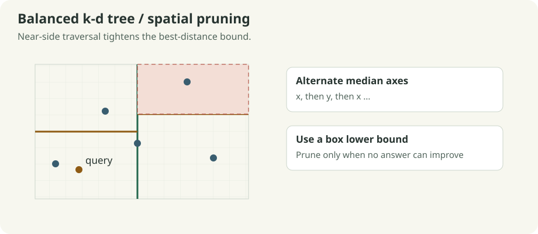
Alternate x and y axes, select a median with nth_element, and recursively split both ranges. Nodes retain their axis-aligned regions. For nearest search, visit the side containing the query first. The squared distance from the query to a box is a lower bound for every point in it; a strictly worse box can be pruned. Equality remains searchable so the lowest-ID tie is retained.
Radius search prunes when the box lower bound exceeds radius² and includes points at exact equality. Answers are returned in ascending ID order. A fresh tree is built for every input snapshot, so moving points cannot leave a stale index.
For A=(0,0), B=(1,0), C=(0,1), D=(1,1), E=(2,1) and query (2,0), B and E tie at distance 1; B has the lower ID. Radius 1.1 includes B and E. Empty input gives no nearest answer and an empty radius result.
Recorded: axis/median construction, visited regions, current best and dashed pruned regions. Check: exhaustive scan. Computation: expected O(n log n) build with median selection and O(n) storage. Nearest/radius queries can visit O(n) nodes in the worst case; radius output also costs O(k log k) here because IDs are sorted.
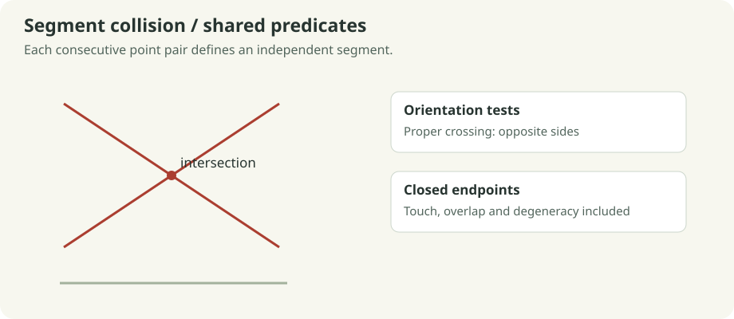
The signed cross product determines orientation. Proper intersections require the endpoints to lie on opposite sides of each other's segment. Collinear on-segment tests additionally include endpoint touches, overlaps and zero-length segments lying on another segment.
Collision mode interprets consecutive input pairs as independent segments and tests each unordered pair once. For (0,0)-(4,4) and (0,4)-(4,0), there is one intersecting pair. Adding a disjoint segment does not change that count. An unmatched final point is unused.
Recorded: the two segments being tested and all intersecting segments found so far. Check: expected crossing/touch/overlap/degenerate tests; no separate runtime oracle is claimed. Computation: O(s²) time for s segments; O(1) working state excluding retained collision lines and trace.
World coordinates are finite doubles bounded to ±10,000,000. Orientation compares the cross product against 1e-9 × max(1, |AB| × |AC|); on-segment bounds use an edge-length-scaled pad. Sorting uses strict exact coordinates, never an approximate comparator. Radius membership is inclusive without an extra tolerance. These are floating-point predicates, not exact arithmetic.
Scene bounds are 256 points, 256 polygon vertices and 4,096 graph edges. A trace stores at most 4,096 snapshots. When capped, it retains its prefix and final state and explicitly reports truncation. Snapshot creation, storage, rendering and reference verification have additional costs beyond the algorithm bounds above. Runtime verification may be quadratic; measured operation counts deliberately exclude it.
SecurityConsole::scene() creates an ordinary Scene from either projected events or scaled device rates. Geographic membership uses the same boundary predicates; proximity uses the same k-d tree; grouping uses the same direct/indexed DBSCAN strategies. Source linkage stays in the security model while the algorithm engine processes coordinates and parameters. The security guide defines the units, filtering and evidence contract.
GeoViz separates editable input, computation, recorded decisions, presentation and persistence. The engine is compiled without raylib, so tests can execute algorithms without opening a window.
The desktop presentation is also composed from focused components. SceneCanvas receives a CanvasContext of const model references and renders surfaces, partitions, topology, highlights, points and queries as separate layers. It cannot edit input or advance playback. SettingsPanel owns its modal field buffer, parses values and validates detached candidate models. App commits a complete candidate only after validation succeeds, then coordinates history and execution. These components live in src/ui_canvas.hpp and src/ui_settings.hpp; procedural surface artwork is isolated in src/canvas_art.hpp.
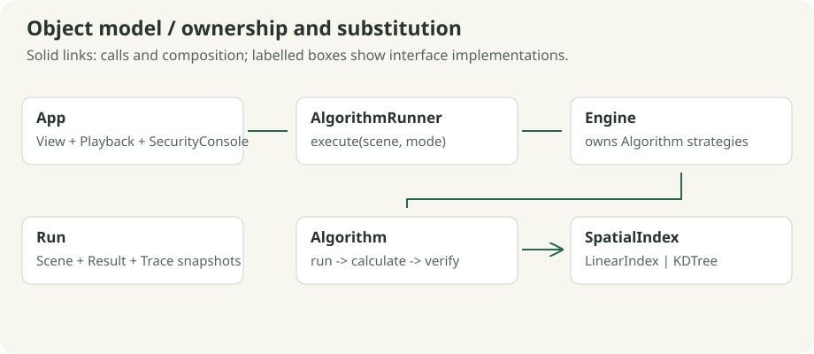
Point validates finite, bounded coordinates. Scene privately owns points, polygons, edges and parameters. Collection getters return const references. Mutators such as removePoint() preserve topology by deleting incident edges and remapping remaining endpoint indices. Setters advance the scene revision. setEdges() validates a candidate copy before replacing the current graph.
Result owns the answer, counters, verification status and trace. Run owns an independent input/result snapshot and exposes const access. Editing the active scene cannot silently alter a historical run. Trace caps stored frames and explicitly preserves the final frame when truncated.
These are practical invariants: private fields and const access prevent UI code from creating untracked mutations or leaving graph references attached to deleted points.
Algorithm defines mode() and the protected virtual calculate(). Its public run() validates input, dispatches calculation and verifies the result. This Template Method keeps the lifecycle consistent while each derived class implements its algorithm.
Engine implements the abstract AlgorithmRunner interface and owns concrete algorithms in std::map<Mode, std::unique_ptr<Algorithm>>. App stores an AlgorithmRunner pointer. Calling execute() selects a Strategy and calls the derived implementation through the base interface.
std::unique_ptr<AlgorithmRunner> runner = std::make_unique<Engine>();
Result result = runner->execute(scene, Mode::Hull);
RouteAlgorithm shares heap search, relaxation, recording and route reconstruction. DijkstraAlgorithm supplies a zero heuristic; AStarAlgorithm supplies the distance estimate. This avoids duplicating a full search loop merely to change its ranking function.
SpatialIndex declares nearest() and radius(). LinearIndex and KDTree implement interchangeable query strategies. DBSCAN owns one index through unique_ptr<SpatialIndex> and shares its cluster-expansion code across scan/indexed modes. LogAdapter and CsvLogAdapter provide the same abstraction at the file-ingestion boundary.
All owning polymorphic bases have virtual destructors. override makes signature mismatches a compiler error, and final marks implementations that are not extension points.
Scene contains model objects; Result contains Stats and Trace; Run contains a Scene and Result; App contains the playback, view and security model. Composition expresses these ownership relationships without forcing unrelated types into an inheritance hierarchy.
Window, Ui and DrawingSession use RAII to pair graphics acquisition/release and begin/end operations. Copying resource owners is disabled to prevent double cleanup. unique_ptr expresses exclusive ownership; vectors and value snapshots manage their storage automatically. The code does not use owning raw new/delete pairs.
| Feature | Concrete use and significance |
|---|---|
| Constructors and private state | Establish valid points, graph edges and resource ownership |
| Const references and const methods | Inspect large collections without copying or permitting mutation |
std::unique_ptr, make_unique |
Own algorithm/index/adapter strategies and release them safely |
| Move semantics | Transfer vectors and completed results instead of repeatedly copying ownership |
enum class |
Keep mode and interaction-state values scoped and typed |
Virtual functions, override, final |
Interchange behavior through checked public contracts |
| STL containers | Vectors for geometry, heaps for route frontiers, queues for density expansion, maps for devices/registry |
| STL algorithms | Exact sorting, median selection, merging and duplicate removal |
| Lambdas and structured bindings | Local comparison/trace helpers and readable heap/adjacency processing |
std::function |
Recursive local traversal for closest pair and tree queries |
| Exceptions and candidate copies | Reject malformed input while preserving usable current state |
std::filesystem and streams |
Portable path handling, versioned input files and precise serialization |
| Compile-time assertions | Tests verify abstract interfaces, virtual destruction and read-only model access |
App::execute() calls AlgorithmRunner::execute() → Engine selects a concrete Algorithm → Algorithm::run() validates, calculates and verifies → Run freezes input/result → Playback selects a recorded Frame → the canvas draws it. The renderer never determines algorithm answers. SceneIO exports the same snapshot used for the display.
The design intentionally remains a bounded desktop application. Algorithms, domain adaptation and presentation are separate; no service framework or additional algorithm family is needed to extend samples or improve visual presentation.
| Responsibility | Interface or component |
|---|---|
| Coordinates, topology and validated edits | scene.hpp, geometry.hpp |
| Immutable answers, recorded pseudocode lines, timeline | trace.hpp |
| Algorithm and spatial-query Strategies | algorithms.hpp |
| Scene persistence and deterministic samples | persistence.hpp |
| Security settings, records, observations, reviews | security.hpp |
| Memento input history and prepared view transaction | workspace.hpp |
| Flush/close, staging, rollback and composed export commit | atomic_files.hpp |
| Bounded stream parsing / CSV / analysis / security persistence | io_detail.hpp, csv.cpp, security.cpp, security_io.cpp |
| Coordinator / commands / input / inspector / widgets / smoke harness | app.hpp, app_commands.hpp, app_input.hpp, app_inspector.hpp, app_render.hpp, app_smoke.hpp |
geoviz.hpp remains a compatibility aggregate. New engine clients can include focused interfaces.
The application headers containing member definitions are implementation sections of App; they do
not pretend to be independently reusable services. Testable input/history and view-preparation logic
lives in graphics-independent classes. This keeps the architecture appropriate for an OOP course.
Security settings are const to callers. setSettings, updateSettings and replace validate detached
candidates before committing. Event replacement clears stale reviews. Dataset/settings revisions
invalidate observation/evaluation caches; review notes/times remain independent of truth labels.
Polymorphism remains concentrated in algorithms, indexes and adapters, rather than being added to
passive records solely to increase the number of classes.
The console turns source events into geometric observations, then reuses the lab's existing algorithms. Two views answer different questions and retain different units.
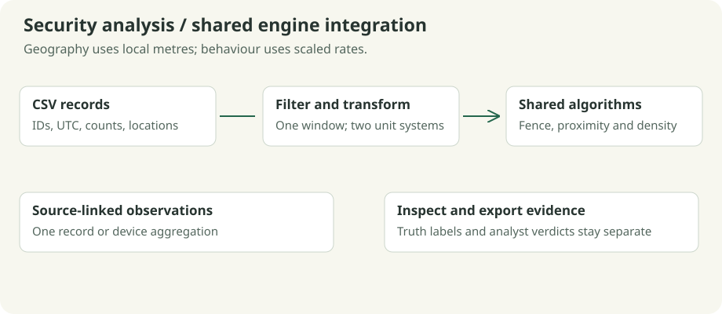
Each selected source event becomes one point. Latitude/longitude are projected to local east/north metres around the configured origin:
x = R × (longitude - origin longitude) × pi/180 × cos(origin latitude × pi/180)
y = R × (latitude - origin latitude) × pi/180
R = 6,371,000 metres
The default origin is 20.2961° N, 85.8245° E. The local model supports a 50 km extent about the origin and origin latitude within ±80°. It is an approximate small-area projection. The offline campus CSV is an illustrative geographic layer with roads, buildings and open areas, rather than a surveyed campus map.
The permitted polygon is separate from the map boundary. Geofence queries classify inside, boundary or outside. Boundary is permitted. Diamonds mark observations strictly outside the polygon. K-d nearest/radius queries inspect proximity in metres; DBSCAN groups nearby observations using the geographic radius.
First apply the same time/user/device filters, then aggregate selected records by device. Every device uses the full selected window duration:
minutes = (end - start) / 60
request rate = sum(requests) / minutes
failure rate = sum(failures) / minutes
x = request rate / request scale
y = failure rate / failure scale
Default scales are 10 requests/min and 1 failure/min; feature radius is 0.8 and MinPts is 3, including self. For example, 400 requests and 40 failures over ten minutes produce (4, 4) after scaling. A behavioural radius is a distance in this scaled plane, not metres or failure percentage.
Observation::events() preserves contributing source indices. A geographic point links to one record; a feature point may link to several. Selecting either view shows identities, neighbours, timestamps, raw counts, summaries and analyst verdicts in the inspector. Sample truth labels are used only for evaluation.
[start, end) window, exact user/device filters (* means all), radii, MinPts or scales..security snapshot.Reloading the snapshot reproduces the analysis independently of the current CSV. New CSV imports clear source-linked reviews. Sample changes reset the analysis context; ordinary view switching keeps settings and review state.
CSV imports retain the active window, filters and fence. Select a scenario with Sample / N to restore its preset configuration.
event_id,timestamp,user_id,device_id,latitude,longitude,requests,failures,label,summary
example-01,1800000100,user-01,device-01,20.2961,85.8245,400,40,benign,Approved research transfer
IDs must be nonempty and event IDs unique. Counts are nonnegative integers with failures ≤ requests; request counts are bounded at one billion. Labels are benign, suspicious, or unknown. The parser supports quoted commas and doubled quotes, with single-line records and an exact header. Inputs are limited to 8 MiB, 4,096 source records and 256 displayed observations; narrow filters when necessary.
The sample catalogue lists all nine datasets and their record counts. data/security_samples.csv is the common registry used by the application and documentation.
| Scenario | Investigation procedure | Expected behaviour |
|---|---|---|
| Perimeter inspection | Run Geofence in the map; inspect corners, edge points and observations 0.5 m from the fence | The preset query is a boundary vertex. Boundary observations are permitted; exterior observations are marked for review. |
| Authentication bursts | Compare the map and feature clusters; inspect the interior burst and approved backup | A coherent failure burst may form a cluster. Density alone does not identify malicious activity. |
| Device movement | Filter a device and inspect its chronologically linked source records | Repeated locations retain distinct event identities and aggregate into one behavioural observation per device. |
| Low-activity telemetry | Run clustering and inspect the evaluation output | Zero-count observations remain valid. Unknown labels are excluded from confusion-matrix denominators. |
| Time-window boundaries | Filter user lab, "night"; compare the full window with a start of 1800000300 |
Start timestamps are included and end timestamps excluded. Rates use the complete selected window duration. |
| Dense campus traffic | Compare direct and indexed DBSCAN on the same filtered input | Both implementations produce identical labels and core/border/noise classifications despite overlapping observations. |
The original reference, campus and research datasets remain available. Sample selection restores preset parameters and clears source-linked reviews; changing views preserves the active analysis.
The documented candidate rule is feature DBSCAN noise OR strictly outside the permitted polygon. It is evaluated per selected source event. A device noise flag propagates to that device's selected records. Known labels produce TP/FP/TN/FN counts; unknown labels are reported separately. Precision, recall and false-positive rate are N/A when their denominator is zero. Analyst review is counted separately and never overwrites sample truth.
The compact reference produces TP=1, FP=1, TN=10, FN=0 with the default parameters and supplied rectangular fence. The false positive is an approved backup outlier. This illustrates why geographic outliers and density noise require contextual review. These synthetic counts do not establish production accuracy.
The adapter reads explicitly selected local exports. The application is an educational analysis console; it does not provide authentication, secure storage, live account ingestion or automated incident response.
GEOVIZ_SECURITY 2 adds quoted analyst notes and integer UTC review times after each verdict.
Version 1 snapshots still load. New settings/event/fence replacements validate a candidate first;
CSV ingestion validates schema independently of the projection origin. Out-of-region event data
is rejected against the configured origin. An unavailable/out-of-region campus background leaves
an empty background without rejecting valid events.
Evidence JSON uses geoviz.evidence.v1 and contains app/source revision, declared units, parameters,
a canonical source-record fnv1a64 consistency hash, reference-check status, source identities,
cluster/noise data and event-level feature_noise, outside_region, and candidate flags. The rule
is always feature noise OR outside region; geographic noise is separately displayed. JSON retains
review note/time and sample truth in separate fields. The adjacent .security file retains all
source data and the fence needed to reproduce the result. The JSON is an index into that snapshot,
not a replacement for it. Unsigned hashes do not authenticate an investigator or an export.
F8 opens a sensitivity panel comparing radius factors 0.75/1/1.25 and MinPts +/-1, plus measurement scale factors 0.75/1.25. Exports retain the same comparison. Changed noise status helps explain parameter sensitivity and is not a production detection-accuracy estimate.
GeoViz.exe from the repository root.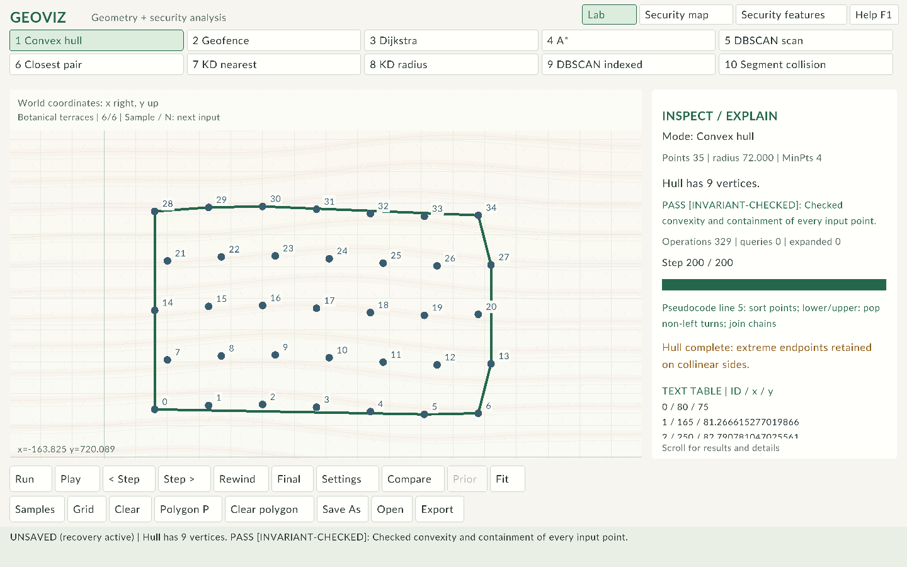
| Action | Control |
|---|---|
| Add/select a point | Left-click the canvas |
| Move a point | Drag it in Lab |
| Set the query | Right-click |
| Delete selected point | Delete |
| Pan / zoom / fit | Middle-drag / wheel / F or Fit |
| Next sample | Sample or N |
| Record / play-pause | Enter / Space |
| Previous-next step | Left / Right |
| First-final frame | Home / End |
| Slower-faster playback | [ / ] |
| Polygon edit tool | P; click vertices in boundary order; drag to adjust |
| Create graph edge | Shift-click two different existing points |
| Set route endpoints | Pick source / Pick destination, then click a point; or select and press R / T |
| Block selected edge | Click an edge, then B |
| Parameters / edge cost | Settings or O |
| Same-input algorithm comparison | Compare or C |
| Compare and export two retained runs | Prior or V |
| Select next-previous point | Period / comma |
| Save / reload session | S / L |
| Export evidence | E |
| Help / dismiss overlay | F1 / Esc |
Scroll the inspector for source records and instructions. Dense scenes omit crowded labels; select points or use period/comma to inspect their identities. Resize the window as needed; the minimum is 960 × 640.
Security mode provides nine scenarios through Sample / N. The canvas identifies the active dataset. The security guide describes the scenario procedures.
Routes: load a Dijkstra/A* sample or choose Grid. Pick source and destination, run, and use Compare to check optimal-cost agreement. Blocking a link changes the input and requires a fresh run. Settings edits a selected edge's cost.
Geofence: use a sample or add polygon vertices with P. Return to the point tool with P, right-click a query and run. Inside, boundary and outside are distinct outcomes. Self-intersecting or zero-area polygons are rejected.
Clustering: choose scan or indexed DBSCAN. Set radius and MinPts in Settings. Filled circles are core points; squares are border points; crosses are noise. MinPts includes the point itself. Compare uses the same input and parameters for both implementations.
Proximity and collision: right-click a query for k-d nearest/radius modes. For collision, points 0-1 form one segment, 2-3 the next, and so on; an unmatched last point has no segment.
Drag a .scene, .csv, or .security file into the window to import it. Choose the matching algorithm after loading a scene. Load reloads output/session.scene or output/session.security; it is not a file picker.
Save writes the current input to output/. Export writes a checked summary and its exact scene, or full security evidence with both view scenes and a security snapshot. Prior exports previous/current runs separately. Input timestamps are UTC epoch seconds; window ends are excluded.
Scene snapshots also preserve polygon drafts, including one or two vertices and crossings that are still being edited. Reloading restores those vertices exactly. A geofence run requires a completed simple polygon and explains invalid geometry before calculating; other algorithms can use the remaining scene while the polygon is unfinished. Save and Load apply the same structural checks, including source/goal indices.
The plaintext GEOVIZ 1 scene format contains point count/coordinates, polygon count/coordinates, edge count/rows, then query x/y, radius, MinPts, source, goal and grid flag. Edge rows are endpointA endpointB weight blocked. Boolean fields are 0 or 1. Coordinates use full-precision doubles; counts and trailing content are validated. See existing scenes before editing manually.
Use Windows, a C++17 compiler and a matching raylib installation. The tested installation uses GCC 15.2.0 and the headers/static library under C:\raylib\w64devkit. Raylib headers and binary must match the compiler architecture.
.\build.ps1 # Isolated tests, then the application
.\build.ps1 -Run # Build, test and launch
.\build.ps1 -Smoke # Build plus 70 offscreen UI captures
.\build.ps1 -DebugBuild # Debug information and standard-library assertions
-CompilerPath and -RaylibRoot override the defaults. The script fails immediately if compilation or a required check fails. It copies the finished program to GeoViz.exe; intermediate executables stay in build/.
An engine-only build needs CMake and a C++17 compiler, with no raylib dependency:
cmake -S . -B build/core -DGEOVIZ_BUILD_APP=OFF
cmake --build build/core --config Release
ctest --test-dir build/core -C Release --output-on-failure
On Windows, use the compiler's terminal environment so its build tool is on PATH. A full CMake desktop build also accepts -DRAYLIB_ROOT=...; the supplied PowerShell script is the shortest Windows path.
Documentation can be regenerated with build.ps1 -Docs after installing Python's Pillow package and Node's marked package (python -m pip install Pillow, npm install --no-save marked). This exports verified C++ trace recordings, then renders the offline guide and repository previews. The desktop application does not require Python or Node.
The printable report is generated separately with python tools/build_report.py and requires ReportLab. Run node tools/verify_docs.mjs first with Playwright and Chrome available; this verifies the guide and renders its diagrams for the report. Both Node tools accept an absolute dependency-module path as their first argument when using an external authoring environment.
Normal tests read the supplied data and write their scenes, reports and temporary inputs beneath a separate test-output directory. They do not rewrite data/. Use the explicit sample exporter when preparing a release, then python tools/build_catalogue.py --source-root "C:\path\to\exports" to read its checked output/ reports and regenerate the catalogue and linked run snapshots. Omitting --source-root reads the project's own exports.
| Symptom | Resolution |
|---|---|
| Program cannot find data or fonts | Keep the executable, data/ and assets/ together; extract the complete folder |
| Script execution is blocked | Use the process-only PowerShell invocation in the README |
| Invalid polygon | Remove crossings, repeated adjacent vertices or folded edges; use boundary order |
| No path | Inspect blocked links and chosen endpoints; an unreachable result is valid |
| Too many observations | Narrow time/user/device filters to at most 256 displayed observations |
| A* reports h=0 fallback | Costs are below geometric lower bounds; the safe result still matches Dijkstra |
| Nothing moves after an edit | Edits invalidate the old trace; Run again |
| Text or points seem outside the view | Fit; scroll the inspector for full explanations |
| Exports cannot be written | Place the folder in a writable location and keep output/ writable |
The application runs offline and reads local input files. It does not require a service account or install a background process.
| Task | Keyboard |
|---|---|
| Workspace / next compatible algorithm | F3 / F4 |
| Named sample picker / select scenario | F2 / number 1-9 |
| Run / play / step / seek endpoints | Enter / Space / Left-Right / Home-End |
| Input undo / redo | Ctrl+Z / Ctrl+Y |
| Named Save As / Open | Ctrl+S / Ctrl+O |
| Quick save / reload default session | S / L |
| Settings, fields, caret and paste | O, Tab, arrows/Home/End, Ctrl+A to replace, Ctrl+V |
| Point selection / edge selection | comma-period / F6 |
| Move selected Lab point / move query | Ctrl+arrows / Shift+arrows |
| Insert point or polygon vertex at query | Ctrl+I (P selects polygon tool) |
| Route source / destination / blocked edge | R / T / B |
| Polygon editing / fit / presentation | P / F / F5 |
| Inspector/help scroll | PageUp / PageDown |
| Text size / keyboard button focus | Ctrl+plus-minus / Tab, Shift+Tab, Enter |
| Compare equivalent frozen runs / close comparison | C / C again |
| Security reset identity filters / sensitivity panel | F7 / F8 |
| Help / dismiss modal | F1 / Escape |
Click the desktop timeline to seek directly. The inspector labels the recorded pseudocode line and shows queue/frontier data, per-vertex g/f/parent rows and a point table. Scroll the inspector for all rows. Comparison maps relative progress across different trace lengths; these are equivalent stages, not identical decisions. Editing input invalidates both comparison displays.
Save As and Open use native Windows dialogs and support multiple independent .scene or .security
files. Recent files are listed in Samples. A CSV is imported using the current security origin; load a
.security snapshot first to configure an origin elsewhere. The campus map is optional there.
Recovery writes Lab, security and unfinished-fence snapshots as one transaction. Closing normally
retains them too. Replacement by Sample, Clear, Grid or Open preserves an earlier generation in
output/recovery-history/ when input is unsaved. Reopen a .scene or .security file from that
folder to restore it. Keep .fence.scene drafts if the polygon is incomplete; they can be opened in
Lab. Recovery is local working data and is excluded from releases and Git.
Security review buttons open a note editor. Notes and UTC review times remain separate from sample truth labels. Export emits text, JSON, full security snapshot, both view scenes and sensitivity text as one checked generation. Invalid/unfinished geofences must be completed or cleared before a security run, save or evidence export. Drafts remain recoverable.
A reported write/flush/close/publication failure restores the prior export. AtomicFiles rollback covers ordinary filesystem errors and keeps recovery backups if restoration itself fails; it is not a power-loss journal or a concurrent multi-process locking protocol.
The laboratory contains 60 deterministic, editable scenes, arranged as six inputs per algorithm. Samples / F2 selects a named scenario; N cycles the selected mode. Import a scene, select its listed mode and run the calculation. Each checked report links to its corresponding input.
The offline guide includes checked algorithm and security recordings. Operation counts exclude verification and playback.
| Tidal and lagoon family | Terrace and mosaic family |
|---|---|
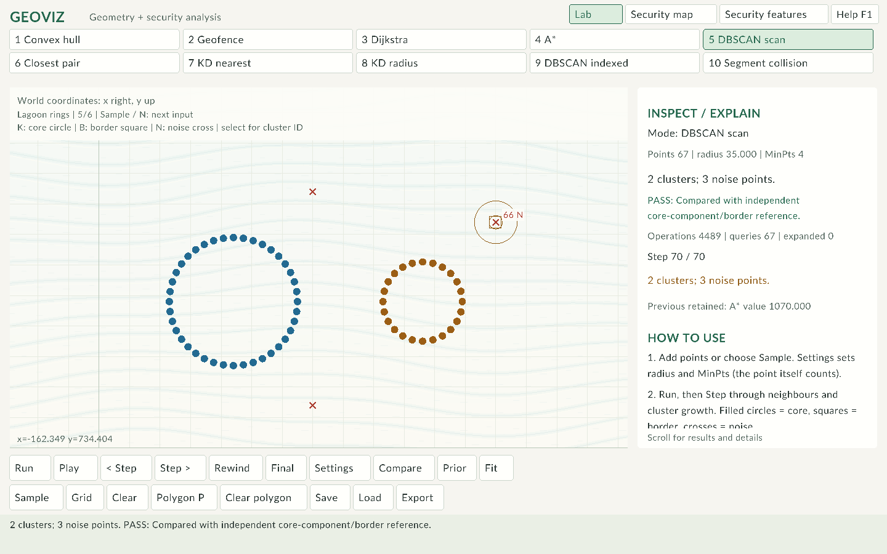 |
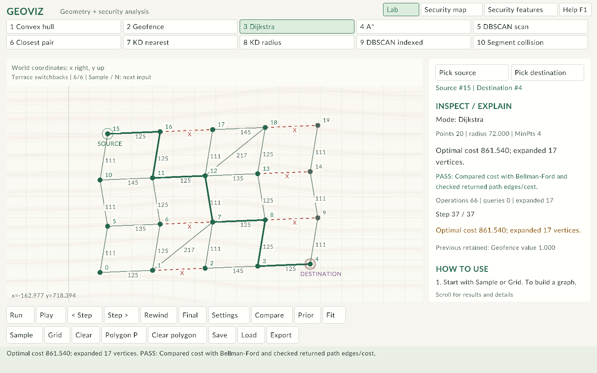 |
| Mode | Points | Radius / MinPts | Checked result | Input / report |
|---|---|---|---|---|
| Convex hull | 12 | 75 / 4 | Hull has 7 vertices. | Scene · Run |
| Geofence | 12 | 75 / 4 | INSIDE | Scene · Run |
| Dijkstra | 12 | 75 / 4 | Optimal cost 403.434; expanded 9 vertices. | Scene · Run |
| A* | 12 | 75 / 4 | Optimal cost 403.434; expanded 5 vertices. | Scene · Run |
| DBSCAN scan | 26 | 45 / 4 | 2 clusters; 2 noise points. | Scene · Run |
| Closest pair | 12 | 75 / 4 | Closest distance 82.462 | Scene · Run |
| KD nearest | 12 | 75 / 4 | Nearest distance 53.852 | Scene · Run |
| KD radius | 12 | 75 / 4 | 1 point inside radius. | Scene · Run |
| DBSCAN indexed | 26 | 45 / 4 | 2 clusters; 2 noise points. | Scene · Run |
| Segment collision | 8 | 75 / 4 | 2 intersecting segment pairs. | Scene · Run |
| Mode | Points | Radius / MinPts | Checked result | Input / report |
|---|---|---|---|---|
| Convex hull | 36 | 82 / 4 | Hull has 10 vertices. | Scene · Run |
| Geofence | 36 | 82 / 4 | INSIDE | Scene · Run |
| Dijkstra | 24 | 82 / 4 | Optimal cost 982.884; expanded 24 vertices. | Scene · Run |
| A* | 24 | 82 / 4 | Optimal cost 982.884; expanded 21 vertices. | Scene · Run |
| DBSCAN scan | 52 | 43 / 4 | 3 clusters; 4 noise points. | Scene · Run |
| Closest pair | 38 | 82 / 4 | Closest distance 5.000 | Scene · Run |
| KD nearest | 36 | 82 / 4 | Nearest distance 42.944 | Scene · Run |
| KD radius | 36 | 82 / 4 | 6 points inside radius. | Scene · Run |
| DBSCAN indexed | 52 | 43 / 4 | 3 clusters; 4 noise points. | Scene · Run |
| Segment collision | 12 | 82 / 4 | 9 intersecting segment pairs. | Scene · Run |
| Mode | Points | Radius / MinPts | Checked result | Input / report |
|---|---|---|---|---|
| Convex hull | 36 | 82 / 4 | Hull has 8 vertices. | Scene · Run |
| Geofence | 36 | 82 / 4 | OUTSIDE | Scene · Run |
| Dijkstra | 24 | 82 / 4 | Optimal cost 966.200; expanded 22 vertices. | Scene · Run |
| A* | 24 | 82 / 4 | Optimal cost 966.200; expanded 16 vertices. | Scene · Run |
| DBSCAN scan | 48 | 35 / 3 | 2 clusters; 4 noise points. | Scene · Run |
| Closest pair | 38 | 82 / 4 | Closest distance 5.000 | Scene · Run |
| KD nearest | 36 | 82 / 4 | Nearest distance 34.381 | Scene · Run |
| KD radius | 36 | 82 / 4 | 6 points inside radius. | Scene · Run |
| DBSCAN indexed | 48 | 35 / 3 | 2 clusters; 4 noise points. | Scene · Run |
| Segment collision | 12 | 82 / 4 | 3 intersecting segment pairs. | Scene · Run |
| Mode | Points | Radius / MinPts | Checked result | Input / report |
|---|---|---|---|---|
| Convex hull | 36 | 82 / 4 | Hull has 13 vertices. | Scene · Run |
| Geofence | 36 | 82 / 4 | INSIDE | Scene · Run |
| Dijkstra | 24 | 82 / 4 | Optimal cost 956.556; expanded 17 vertices. | Scene · Run |
| A* | 24 | 82 / 4 | Optimal cost 956.556; expanded 15 vertices. | Scene · Run |
| DBSCAN scan | 52 | 40 / 4 | 2 clusters; 22 noise points. | Scene · Run |
| Closest pair | 38 | 82 / 4 | Closest distance 5.000 | Scene · Run |
| KD nearest | 36 | 82 / 4 | Nearest distance 58.063 | Scene · Run |
| KD radius | 36 | 82 / 4 | 4 points inside radius. | Scene · Run |
| DBSCAN indexed | 52 | 40 / 4 | 2 clusters; 22 noise points. | Scene · Run |
| Segment collision | 16 | 82 / 4 | 28 intersecting segment pairs. | Scene · Run |
| Mode | Points | Radius / MinPts | Checked result | Input / report |
|---|---|---|---|---|
| Convex hull | 48 | 72 / 4 | Hull has 11 vertices. | Scene · Run |
| Geofence | 48 | 72 / 4 | BOUNDARY | Scene · Run |
| Dijkstra | 18 | 72 / 4 | Optimal cost 1070.000; expanded 14 vertices. | Scene · Run |
| A* | 18 | 72 / 4 | Optimal cost 1070.000; expanded 14 vertices. | Scene · Run |
| DBSCAN scan | 67 | 35 / 4 | 2 clusters; 3 noise points. | Scene · Run |
| Closest pair | 50 | 72 / 4 | Closest distance 5.000 | Scene · Run |
| KD nearest | 41 | 72 / 4 | Nearest distance 72.000 | Scene · Run |
| KD radius | 41 | 72 / 4 | 4 points inside radius. | Scene · Run |
| DBSCAN indexed | 67 | 35 / 4 | 2 clusters; 3 noise points. | Scene · Run |
| Segment collision | 16 | 72 / 4 | 6 intersecting segment pairs. | Scene · Run |
| Mode | Points | Radius / MinPts | Checked result | Input / report |
|---|---|---|---|---|
| Convex hull | 35 | 72 / 4 | Hull has 9 vertices. | Scene · Run |
| Geofence | 35 | 72 / 4 | INSIDE | Scene · Run |
| Dijkstra | 20 | 72 / 4 | Optimal cost 861.540; expanded 17 vertices. | Scene · Run |
| A* | 20 | 72 / 4 | Optimal cost 861.540; expanded 15 vertices. | Scene · Run |
| DBSCAN scan | 76 | 29 / 4 | 4 clusters; 4 noise points. | Scene · Run |
| Closest pair | 37 | 72 / 4 | Closest distance 5.000 | Scene · Run |
| KD nearest | 36 | 60 / 4 | Nearest distance 60.000 | Scene · Run |
| KD radius | 36 | 60 / 4 | 4 points inside radius. | Scene · Run |
| DBSCAN indexed | 76 | 29 / 4 | 4 clusters; 4 noise points. | Scene · Run |
| Segment collision | 16 | 72 / 4 | 14 intersecting segment pairs. | Scene · Run |
In either security view, Sample / N cycles the catalogue. Each selection restores its documented radii, MinPts, fence and default window. Changing views preserves the current settings and reviews. All records are synthetic.
| Dataset | File / selected records | Devices | Scenario |
|---|---|---|---|
| Compact reference | 12 / 12 | 12 | Normal use, approved backup and an isolated failure burst |
| Campus operations | 50 / 48 | 16 | Repeated records, remote transfers and excluded time endpoints |
| Research network | 42 / 40 | 20 | Mixed device groups and observations with unknown labels |
| Perimeter inspection | 16 / 16 | 16 | Corner, edge, interior and exterior observations |
| Authentication bursts | 36 / 36 | 12 | Clustered failures, an interior burst and an approved backup |
| Device movement | 48 / 48 | 8 | Repeated device locations crossing the permitted boundary |
| Low-activity telemetry | 9 / 9 | 9 | Zero-count observations and unknown-label evaluation |
| Time-window boundaries | 27 / 24 | 12 | Inclusive start, exclusive end and quoted identity filters |
| Dense campus traffic | 128 / 128 | 64 | Overlapping observations and several activity-density groups |
Use the source-linked inspector to review a device, then export evidence. Security processing explains the metric, filters, labels and review rule.
Grid loads 70 vertices with unit-cost four-neighbour connections and a barrier opening. Source 0 to goal 69 has optimal cost 15 in both Dijkstra and A*. Block another passage to test detours or unreachable results.
The tests also construct duplicates, collinear hulls, exact-radius queries, nearest ties, overlapping segments, zero-length segments, unreachable graphs and noise-to-border transitions. These cases are separate from the larger visual samples so their expected answers stay easy to inspect.
Verification date: 24 October 2026. Verification applies to the supplied build configuration and documented input limits.
| Layer | Method | Result |
|---|---|---|
| Release build | GCC 15.2.0, C++17, -Wall -Wextra -Wpedantic -Werror, static link |
Passed |
| Engine suite | 1766 assertions, fixed seed 425050 | Passed |
| Second compiler | Clang, warnings treated as errors and library assertions | Passed |
| Undefined-behaviour instrumentation | Clang -fsanitize=undefined -fsanitize-trap=all on the engine suite |
Passed, no trap |
| Independent build path | Full desktop CMake build, reusable engine target and isolated CTest | Passed |
| Application state | Run/history, edits, settings transactions, six-sample cycling, filters, source review, queries, snapshots, exports and endpoint picking | Passed |
| Rendered UI | 70 states at 960×640, 1440×900 and 1920×1080 | Passed; captures visually reviewed |
| Offline guide | 24 recordings, step/play/rewind/final, timeline, navigation and narrow layout | Passed |
| Delivery | Clean-folder launch, source/executable hashes, local links and archive integrity | Passed |
Concise logs are supplied in docs/verification/. Build scripts stop on compiler errors and failed engine assertions. The CI workflow runs the engine suite on repository pushes and pull requests; its remote result is available only after a push.
Eighty seeded scenes exercise multiple algorithms against references, including random weighted graphs. Tests use a fixed seed so failures can be reproduced. References use Bellman-Ford, exhaustive distance/query scans, winding classification, hull invariants and an independent DBSCAN core-component construction. Segment collision uses expected cases rather than claiming a separate runtime oracle.
| Component group | Delivered implementation and evidence |
|---|---|
| Geometry kernel, hull, geofence and collision demonstrations | GeometryKernel, concrete algorithm classes; expected cases, invariant/reference checks and recordings |
| Dijkstra, A*, weighted/blocked graphs and grid navigation | Shared route Strategy with heuristic specializations; same-input optimal-cost/exploration comparisons |
| Direct and indexed DBSCAN | Shared expansion with LinearIndex / KDTree; queue/core/border/noise recordings and agreement checks |
| Divide-and-conquer closest pair | x-sort, recursive ranges, merged y order and strip comparisons; exhaustive verification |
| Balanced k-d construction, nearest and radius queries | Alternating median splits, visited/pruned regions, inclusive queries and fresh rebuilds |
| Editing, playback, rewind, comparisons and persistence | Scene, Run, Trace, Playback, SceneIO; edit invalidation and saved-input tests |
| Geographic and behavioural security views | Offline geographic layer, local projection, scaled device rates, common filters and source-linked inspector |
| Event ingestion and review evidence | Abstract log adapter plus local CSV implementation; labelled samples, separate analyst verdicts and reproducible exports |
| Bounded input, accessible labels and checks | Explicit limits, shape/line cues, readable inspector, validation and capped-trace disclosure |
| OOP/C++ design and deliverables | Encapsulation, polymorphic Strategies, RAII, source/test separation; focused design guide and portable executable |
The console reads local exports through the CSV adapter. It does not integrate a live production service.
SceneCanvas consumes a const frame context and separates rendering into surface, region, topology, highlight, point, query and annotation layers. SettingsPanel owns modal input and validates detached candidate models. App coordinates commits and history. The 70-state smoke sequence covers both components, failed settings transactions and every added sample.
Floating-point geometry uses documented tolerances rather than exact predicates. Geographic distances are approximate within a local study area. Runtime reference checks add work beyond the displayed algorithm counts. A k-d tree can visit all points; indexed DBSCAN can still be quadratic. Trace storage can omit middle decisions when capped, while retaining the final result.
UI verification combines programmatic state checks and offscreen rendering; physical mouse/keyboard sequences and display configurations are not exhaustively covered. The supplied executable targets Windows x64. Synthetic security labels demonstrate reproducibility and false-positive accounting, not production detection accuracy.
The 40-item review response is in REVIEW_RESOLUTION.md. The focused CTest cases cover geometry, routing, clustering, persistence, security, edit transitions and structured evidence; the original broad suite remains. The desktop harness now captures 77 states at 960x640 and 1440x900, including new sample/settings/review/comparison/presentation/text layouts. See small-window report, normal-window report, text contrast ratios, benchmark phases, and measurement environment.
The CI workflow runs GCC/Clang Debug/Release, supported ASan/UBSan, coverage, cppcheck, Windows desktop/resource builds, Linux graphics and OS input, and pinned guide regeneration. It preserves logs/screenshots and publishes release assets only after required jobs succeed. Local Windows checks do not imply Linux sanitizer success; inspect CI for the exact commit.
Regression checks assert path identities, topology, cache invalidation, reference failures, complete export rollback and hash reconstruction. The bounded parser campaign uses seed 425050 and does not claim exhaustive fuzz coverage. Collision is test-covered without a distinct runtime oracle; hull is invariant-checked; other listed modes declare their independent runtime reference checks.